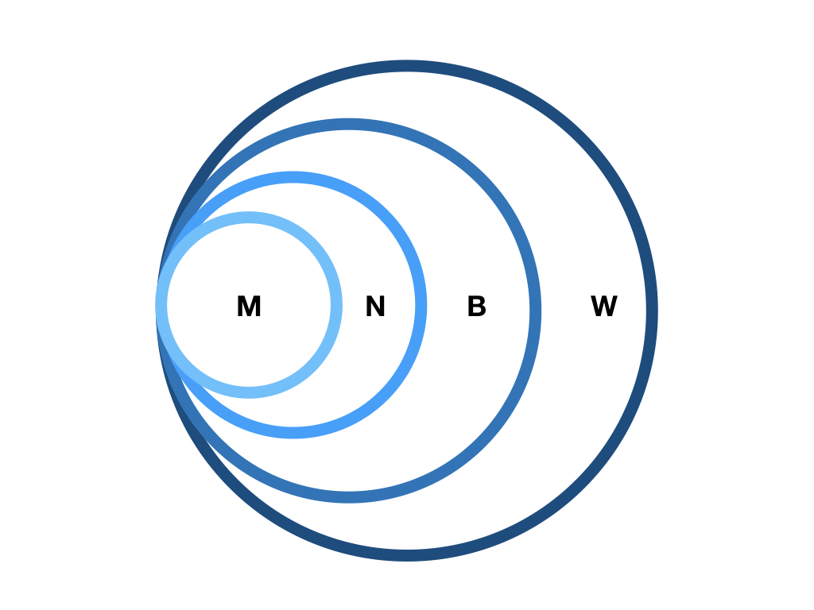

Making cognitive (neuro)science even better
Rick O. Gilmore
2019-05-28 16:23:46
Preliminaries


Overview
- The hardest science
- Why it’s hard
- Making cognitive (neuro)science even better
Psychology is the hardest science
(Harder than physics)


Why it’s hard

_-_Google_Art_Project.jpg#/media/File:Pieter_Bruegel_the_Elder_-_The_Tower_of_Babel_(Vienna)_-_Google_Art_Project.jpg)

Logically separable embedded realms
| Realm | Domain |
|---|---|
| \(W\) | The world |
| \(B\) | The body |
| \(N\) | The nervous system |
| \(M\) | The mind |
- Body (\(B\)) within world (\(W\))
- Nervous system (\(N\)) within body (\(B\))
- Mind (\(M\)) within nervous system (\(N\))
Mutually coupled dynamic states
\(\dot{M} = f(M,N)\)
\(\dot{N} = f(N,B)\)
\(\dot{B} = f(B,N,W)\)
\(\dot{W} = f(W,B)\)
Measure
- \(W\), \(B\), \(N\) directly
- Across multiple spatial & temporal scales

- Measure mental states \(M\) indirectly
- Via \(N\), \(B\), \(W\) (+ prior beliefs/knowledge)
Linear/open-loop theoretical frameworks dominate
\(Stimulus (S) \rightarrow Response (R)\)


B.F. Skinner

Noam Chomsky
\(Stimulus (S) \rightarrow Cognition (C) \rightarrow Response (R)\)

\(S \rightarrow N \leftrightarrow C \rightarrow R\)

Closed-loop causal chains better reflect the underlying reality

Responses (\(R\)) affect the World (\(W\)) \(W\) states create stimuli (\(S\)) \(S\) affect \(C\) (cognition) \(C\) affects \(R\) …repeat
Even when we know or fully control \(W\), \(S\), \(C\), and \(R\)

“We show that [classic analytic neuroscience] approaches reveal interesting structure in the data…”
“…but do not meaningfully describe the hierarchy of information processing in the microprocessor.”
“This suggests current analytic approaches in neuroscience may fall short of producing meaningful understanding of neural systems, regardless of the amount of data.”
Computational algorithms are powerful
but neither omnipotent nor ubiquitous

By Nicolás Pérez, CC BY-SA 3.0, Link
- How to regulate the speed of a Watt-style steam engine?
1. Measure the speed of the flywheel.
2. Compare the actual speed against the desired speed.
3. If there is no discrepancy, return to step 1. Otherwise,
a. measure the current steam pressure;
b. calculate the desired alteration in steam pressure;
c. calculate the necessary throttle valve adjustment.
4. Make the throttle valve adjustment.
5. Return to step 1.

Algorithms vs. Dynamics (Van Gelder, 1995)
- How much do we really understand about cognition/computing in physical entities we did not design and make?
Biological computing
- Constrained by space, time, energy

25 W vs. ?? MW
- Computes with chemistry (neurotransmitters, hormones) when possible
- With ‘wires’ (axons & dendrites) when necessary

- Engages in real-time behaviors with existential consequences (e.g., ingestion, defense, reproduction, locomotion, pursuit)
- Operates effectively in complex, dynamic environments
Biological computing
- Separates neural ‘streams’ for \(S \leftrightarrow C \leftrightarrow A\)

Bigger, denser, more diverse data will help, but
Big data (-omics) initiatives in the biological sciences…
Give short-shrift to behavior
“Behavior is the linchpin of the most vexing problems in public health…”
“Behavior contributes to the progression or prevention of disease, defines a disorder or marks recovery, and provides mechanisms for therapeutic intervention.”
“…a better understanding of behavior is fundamental to achieving positive health outcomes, from prenatal development throughout adulthood.”


Is there a reproducibility crisis in science?
- Yes, a significant crisis
- Yes, a slight crisis
- No crisis
- Don’t know

Have you failed to reproduce an experiment from your lab or someone else’s?

Making cognitive (neuro)science even better
Support research that
- studies behavior (& accompanying internal states)
- samples densely (and/or broadly) in time & space
- creates meaningful linkages across levels of analysis
- connects between & among systems/domains
- attempts to close causal loops
- specifies algorithms and/or dynamical processes
- demonstrates a meaningful commitment to rigorous, reproducible, & robust findings

Support research that
- collects & shares video as data & documentation
Why video?
Video…
- Captures (& preserves)
- Shows (& helps tell…)
- Expands the scope of inquiry
- Provides unequaled opportunities for reuse
\(n=900\) 12-, 18-, 24-mo-olds; \(n=30\) sites demographics, health, vocabulary, media use, & temperament openly shared with the research community
Support research that
- Shares procedures, materials, code, & data openly (but securely)
- Makes sharing scripted, fully reproducible workflows easy
vol_8 <- databraryapi::download_session_csv(vol_id = 8)
vol_8 %>%
filter(participant.gender %in% c('Male', 'Female')) %>%
ggplot() +
aes(x = participant.race, fill = participant.race) +
facet_grid(. ~ participant.gender) +
geom_bar(stat="count") +
theme(axis.text.x = element_text(angle = 90, hjust = 1))R package https://github.com/PLAY-behaviorome/databraryapi
Python package https://github.com/PLAY-behaviorome/databrarypi
Support research that
- enables linkages between & across data sets
- exploits advances in AI and machine learning
Source: Ori Ossmy, NYU
If we do these things…

Thank you
rogilmore@psu.edu https://gilmore-lab.github.io https://gilmore-lab.github.io/2019-06-03-McDonnell-Fdn/ @rogilmore
Materials
This talk was produced on 2019-05-28 in RStudio version using R Markdown and the reveal.JS framework. The code and materials used to generate the slides may be found at https://github.com/gilmore-lab/2019-06-03-McDonnell-Fdn/. Information about the R Session that produced the code is as follows:
## R version 3.5.2 (2018-12-20)
## Platform: x86_64-apple-darwin15.6.0 (64-bit)
## Running under: macOS Mojave 10.14.5
##
## Matrix products: default
## BLAS: /System/Library/Frameworks/Accelerate.framework/Versions/A/Frameworks/vecLib.framework/Versions/A/libBLAS.dylib
## LAPACK: /Library/Frameworks/R.framework/Versions/3.5/Resources/lib/libRlapack.dylib
##
## locale:
## [1] en_US.UTF-8/en_US.UTF-8/en_US.UTF-8/C/en_US.UTF-8/en_US.UTF-8
##
## attached base packages:
## [1] stats graphics grDevices utils datasets methods base
##
## other attached packages:
## [1] igraph_1.2.2 forcats_0.3.0
## [3] stringr_1.4.0 dplyr_0.8.0.1
## [5] purrr_0.3.2 readr_1.3.1
## [7] tidyr_0.8.2 tibble_2.1.1
## [9] ggplot2_3.1.0 tidyverse_1.2.1
## [11] databraryapi_0.1.6.9001
##
## loaded via a namespace (and not attached):
## [1] revealjs_0.9 tidyselect_0.2.5 xfun_0.6 reshape2_1.4.3
## [5] haven_2.0.0 lattice_0.20-38 colorspace_1.4-1 generics_0.0.2
## [9] htmltools_0.3.6 yaml_2.2.0 rlang_0.3.3 pillar_1.3.1
## [13] glue_1.3.1 withr_2.1.2 modelr_0.1.2 readxl_1.2.0
## [17] plyr_1.8.4 munsell_0.5.0 gtable_0.3.0 cellranger_1.1.0
## [21] rvest_0.3.2 codetools_0.2-15 evaluate_0.13 labeling_0.3
## [25] knitr_1.22 curl_3.3 highr_0.8 broom_0.5.1
## [29] Rcpp_1.0.1 scales_1.0.0 backports_1.1.3 jsonlite_1.6
## [33] hms_0.4.2 digest_0.6.18 stringi_1.4.3 keyring_1.1.0
## [37] grid_3.5.2 cli_1.1.0 tools_3.5.2 magrittr_1.5
## [41] lazyeval_0.2.2 crayon_1.3.4 pkgconfig_2.0.2 rsconnect_0.8.13
## [45] xml2_1.2.0 lubridate_1.7.4 assertthat_0.2.1 rmarkdown_1.12
## [49] httr_1.4.0 rstudioapi_0.10 R6_2.4.0 nlme_3.1-137
## [53] compiler_3.5.2